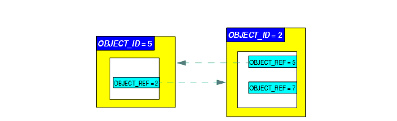
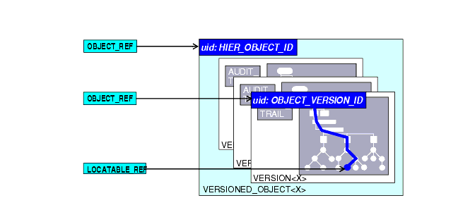

9 Identification
9.1 General Scheme
The identification scheme described here requires two kinds of "identifier": identifiers proper and references, or locators. An identifier is a unique (within some context) symbol or number given to an object, and usually written into the object, whereas a reference is the use of an identifier by an exterior object, to refer to the object containing the identifier in question. This distinction is the same as that between primary and foreign keys in a relational database system.
In the openEHR RM, identifiers and references are implemented with two groups of classes defined in the support.identification package. Identifiers of various kinds are defined by descendant classes of OBJECT_ID, while references are defined by the classes inheriting from OBJECT_REF. The distinction is illustrated in FIGURE 28. Here we see two container objects with OBJECT_IDs (since OBJECT_ID is an abstract type, the actual type will be another XXX_ID class), and various OBJECT_REFs as references.

9.2 Levels of Identification
In order to make data items locatable from the outside, identification is supported at 3 levels in openEHR, as follows:
- version containers: VERSIONED_OBJECTs (Common IM) are identified uniquely;
- top-level content structures: content structures such as COMPOSITION, EHR_STATUS, EHR_ACCESS, PARTY etc. are uniquely identified by the association of the identifier of their containing VERSIONED_OBJECT and the identifier of their containing VERSION within the container;
- internal nodes: nodes within top-level structures are identified using paths.
Three kinds of identification are used respectively. For version containers, meaningless unique identifiers ("uids") are used. In most cases, the type HIER_OBJECT_ID will be used, which contains an instance of a subtype of the UID class, i.e. either an ISO OID or a IETF UUID (see http://www.ietf.org/rfc/rfc4122.txt; also known as a GUID). In general UUIDs are favoured since they require no central assignment and can be generated on the spot. A versioned container can be then referenced with an OBJECT_REF containing its identifier.
Versions of top-level structures are identified in a way that is guaranteed to work even in distributed environments where copying, merging and subsequent modification occur. The full identification of a version of a top-level structure is the globally unique tuple consisting of the uid of the owning VERSIONED_OBJECT, and the two VERSION attributes version_tree_id and creating_system_id. The version_tree_id is a 1 or 3-part number string, such as "1" or for a branch, "1.2.1". The creating_system_id attribute carries a unique identifier for the system where the content was first created; this may be a GUID, Oid or reverse internet identifier. A typical version identification tuple is as follows:
F7C5C7B7-75DB-4b39-9A1E-C0BA9BFDBDEC -- id of VERSIONED_COMPOSITION au.gov.health.rdh.ehr1 -- id of creating system 2 -- current versionThis 3-part tuple is known as a "Version locator" and is defined by the class OBJECT_VERSION_ID in the support.identification package. A VERSION can be referred to using a normal OBJECT_REF that contains a copy of the version's OBJECT_VERSION_ID. The openEHR version identification scheme is described in detail in the change_control package section of the Common IM.
The last component of identification is the path, used to refer to an interior node of a top-level structure identified by its Version locator. Paths in openEHR follow an Xpath style syntax, with slight abbreviations to shorten paths in the most common cases. Paths are described in detail below.
To refer to an interior data node from outside a top-level structure, a combination of a Version locator and a path is required. This is formalised in the LOCATABLE_REF class in the change_control package section of the Common IM. A Universal Resource Identifier (URI) form can also be used, defined by the data type DV_EHR_URI (Data types IM). This type provides a single string expression in the scheme-space "ehr://" which can be used to refer to an interior data node from anywhere (it can also be used to represent queries; see below). Any LOCATABLE_REF can be converted to a DV_EHR_URI, although not all DV_EHR_URIs are LOCATABLE_REFs.
FIGURE 29 summarises how various types of OBJECT_ID and OBJECT_REF are used to identify objects, and to reference them from the outside, respectively.

|
openEHR Foundation http://www.openEHR.org |